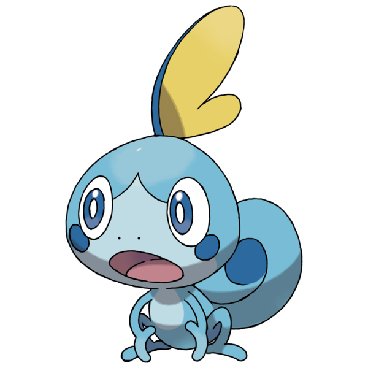

March 14, 2019
GatorGrader Development Experience
Over the course of the early spring 2019 semester, I've been doing work as a part of the Software Innovation II class to further develop and improve Allegheny's proprietary GatorGrader program. This program allows for easy grading of computer science classwork, and hosts a massive suite of tools to assist educators in their grading endeavors.
As GatorGrader is developed in python code, something I was less experienced with at the start of the project, I asked to be thrown in by working on code review. Code review had not been something I had had much of a chance to do before. These factors made the code review work that I did a useful way to learn more about the code review process, methods by which a developer can increase documentation, and how development in python works. I would say that I gained the most knowledge in the documention increasing part of the work, but that is exclusively because of the skillful work from our implementation team, which left me with little to refine. The specific code that I worked on reviewing was a new implementation for extracting the information from paragraphs within markdown files.
After working on the code review team, we shifted the structure from a three team structure (library, implementation, and review) to a two team structure (implementation and review). With this shift, my work went from code review to implementation of new code. My work was primarily in adding a simple count that checks the number of a specified tag within a markdown file. This would allow users of the GatorGrader program to count code blocks, links, or headers, for example. I fell victim to self-doubt, making my code worse for the wear, but a colleague was able to assist me in making my code less convoluted. That said, this gave me a lot more comfort in working in python, as it was the most I had ever personally worked in writing python. My work taught me how to better read test cases, debug code, and look for the important aspects of similar regions of code to see what parts may be useful in other, less specified tasks. The most important thing I learned was to not doubt myself so much while coding.
Overall, my work on this project has taught me valuable skills that I can take with me far beyond the project. As I have stated multiple times above, I gained far more experience and comfort with python, though this was not all I took away from the project. This has been the largest team I have worked with in a computer science class, and, as such, it gave me a lot of experience in working as a part of a larger development team, and how such projects can and should be structured. It was an invaluable experience, and I'm glad to see that my work in the class will be utilized to help to educate students in our computer science department.
March 2nd, 2019
My Thoughts on the Pokemon Sword and Shield Announcement
February 27th was a huge day for Pokemon fans, as the Pokemon Company finally announced their upcoming Pokemon titles for the Nintendo Switch, Pokemon Sword and Pokemon Shield, in a 7 minute long Pokemon Direct. This short video showcased a lot of what the games had to offer, while also leaving almost everything about the new games as a mystery.
Gameplay Footage
There was a lot of gameplay footage from Pokemon Sword and Shield in the Direct, as they started it up only a couple minutes in. From the start, we get a chance to look at the most beautiful overworld a Pokemon game has ever offered, full of vibrant colors, a detailed landscape, and complex buildings within the cities.
I love to see that they're bringing the cel shading that made the 3DS titles look so timeless to the Switch, though I feel like they could have used more. The shading feels very soft, and, in a lot of the footage, the lighting looks really strong. Everything just looks really shiny as it is now. Hopefully, they'll dial the light reflectivity on the textures down a bit before release. That said, the models look just as good as ever, considering the fact that the models they made for the 3DS titles were so good already.
I'm also excited to see that they're bringing something akin to gyms back for the 8th generation of Pokemon. Trials were fun, but I never like them as much as gyms, and their theming doesn't really work as well outside of Alola. You may notice that I said, "something akin to gyms" earlier. This isn't to say that they aren't gyms, but, instead, it is to say that they are doing something that looks pretty dang new for the gyms. All of the gyms look like massive soccer stadiums, and this reference is furthered by the soccer uniform numbered 227 that the player's trainer wears when stepping out onto the field in the trailer. This may suggest that they're doing something drastically different from classical gyms and the recent trial system, but only time will tell just how different that something will be.
The Starters
I've heard some people express disappointments with one or all of the starters from Pokemon Sword and Shield, but, personally, I think this is the strongest set we've seen in a good while. I'm going to take some time to breakdown my thoughts on each individual starter, because it wouldn't do them justice for me to discuss them in any way but individually.
Grookey
Grookey is one of the grass starters that just immediately grabbed my attention. I love almost everything about Grookey's design: I love its little stick, I love its coloring, I love its little mouth. It's all so fun. The combination of orange, brown, green, and yellow just works. There's a slight contrast between the green and the brown, as well as between the green and the orange, and the yellow works as a means to tie it all together. The stick Grookey holds, normally left in the leaves on its head, appears to double as an accessory and some level of weapon. As soon as I saw that stick tapping on the rock, I was overjoyed. How can you not love a little monkey with a little beatin' stick? How?
That said, I don't love everything Grookey brings with it. Specifically, I hate that it's been dubbed the "Chimp Pokemon" while it has a tail. The "Beatin' Stick Pokemon" would have been a better term, and that's trash.
Scorbunny
I'll be the first to admit it, I think Scorbunny is the weakest design of the generation 8 starters. That said, it's still pretty cute. I really like the shade of orange they chose for the ears, as well as the smug personality Scorbunny brings to the table. I also loved Snivy for its smugness, so Scorbunny's is far from unwelcome.
That said, I think that the white body leaves Scorbunny looking very plain. Not only that, but its design feels like Bunnelby if it were a Fire-type, rather than a Normal-type. This isn't wholely bad, as I love Bunnelby, but it's most certainly not good to have it look so similar. Honestly, I think the worst part is that I don't have much else to say. There's nothing unique enough about Scorbunny to drive on the dialogue about it. It's cute, sure, but what else is there?
Sobble

Sobble, my almost perfect little bean, my sad little bab, is my single favorite starter of these games. I love Grookey, but I can already feel my love for Sobble growing by the day. Sobble is just a sad, anxious, precious little chameleon that needs love. I'm so excited to see where it goes as it evolves, but, for now, it's still just a solid first-stage Water-type starter. I love the little grippy hands and feet that look just like a chameleon's would, and I especially love the ever present cheek dots meant to reference tears.
What I'm less sure about is Sobble's general look. It feels very, and I mean very, much like Mudkip when I look at it. Once again, I love Mudkip, but this similarity is still a problem. I've worked on a Fakemon title, and we designed over 200 Fakemon. Only a couple felt in any way similar to real Pokemon, and even then, they had enough distinction for it to not be a problem. On the upside, Sobble at least has a unique personality that leaves it feeling more different from Mudkip once you see it in action.
The Region
I know this blog post has gone on for a while, but I haven't even gotten to the region itself yet. Pokemon Sword and Shield take place in the Galar region, which is heavily influenced in design by the United Kingdom. It's silhouette is the exact same as that of the UK, albeit flipped upside down. The game's landmarks are all strongly tied into those of the United Kingdom, from its giant hillside drawings to its London Eye-inspired ferris wheel to the north, it has it all. It's a region that I'm extremely excited to explore, especially if they pull musical concepts from the real-world UK into the Galar region. I love folk music, and I'd love to hear some work its way into the music of Pokemon Sword and Shield.
That said, I think I've gone on rambling for long enough. It's safe to say that this is the most excited I've been for a new generation of Pokemon for a while now, and I think that's a safe thing to generalize across much of the fandom, judging by the reactions I've seen. This is the first time we'll be having a proper Pokemon adventure on an HD system, and that's nothing to gawk at. That said, we'll have to wait to see just how well Pokemon Sword and Shield stack up to the others when the titles launch later this year, presumably on November 15th or 22nd.